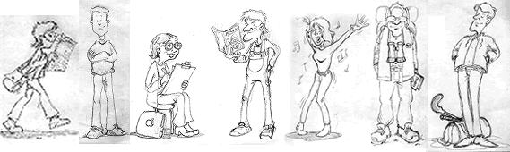

|  |
Hej!
Problem får vi väl alla ibland. Anna, Mårten, Karin, Tobbe, Sara, Niklas och Stefan är inga undantag. Kanske kan du hjälpa dem med några olika saker som har med kursen Matematik B att göra.
Klicka på kursmålen nedan så får du möta dem i olika situationer. Om du kan hjälpa dem har du nog nått minst G på kursen. (För en del uppgifter krävs kanske ännu mer avancerade kunskaper.)
Du kan få hjälp av datorn att kontrollera vissa av dina svar. I andra fall behöver du kanske diskutera dina lösningar med en professionell person. Du kan t.ex. skriva ut ett "färskt" exemplar av de testuppgifter du önskar och sedan lämna in dina skriftliga lösningar till din lärare för bedömning. Om dina lösningar är ok och du kan redogöra muntligt blir du godkänd på detta kursmål. (För VG och MVG kan du be om att få göra ett prov för hela kursen eller andra uppgifter som är bättre anpassade för högre betyg.)
Hjälpmedel: Du får använda de hjälpmedel du anser att du behöver. Din lärare avgör vad de spelar för roll vid bedömningen av dina lösningar.
Tekniska krav: Troligen är det inga större problem om du använder en webbläsare av version Netscape 4, Explorer 4, eller senare, med JavasScript och Shockwave Flash. (Vissa skillnader mellan webbläsare kan orsaka problem ibland men är under utredning.) En dator med högtalare är användbart men inte nödvändigt.
Förkunskapskrav: Matematik A
Målet för kursen är att ge ökade insikter i matematiska begrepp och metoder för att med matematiska modeller kunna lösa problem inom olika områden.
i geometri
i sannolikhetslära och statistik
i algebra
i funktionslära